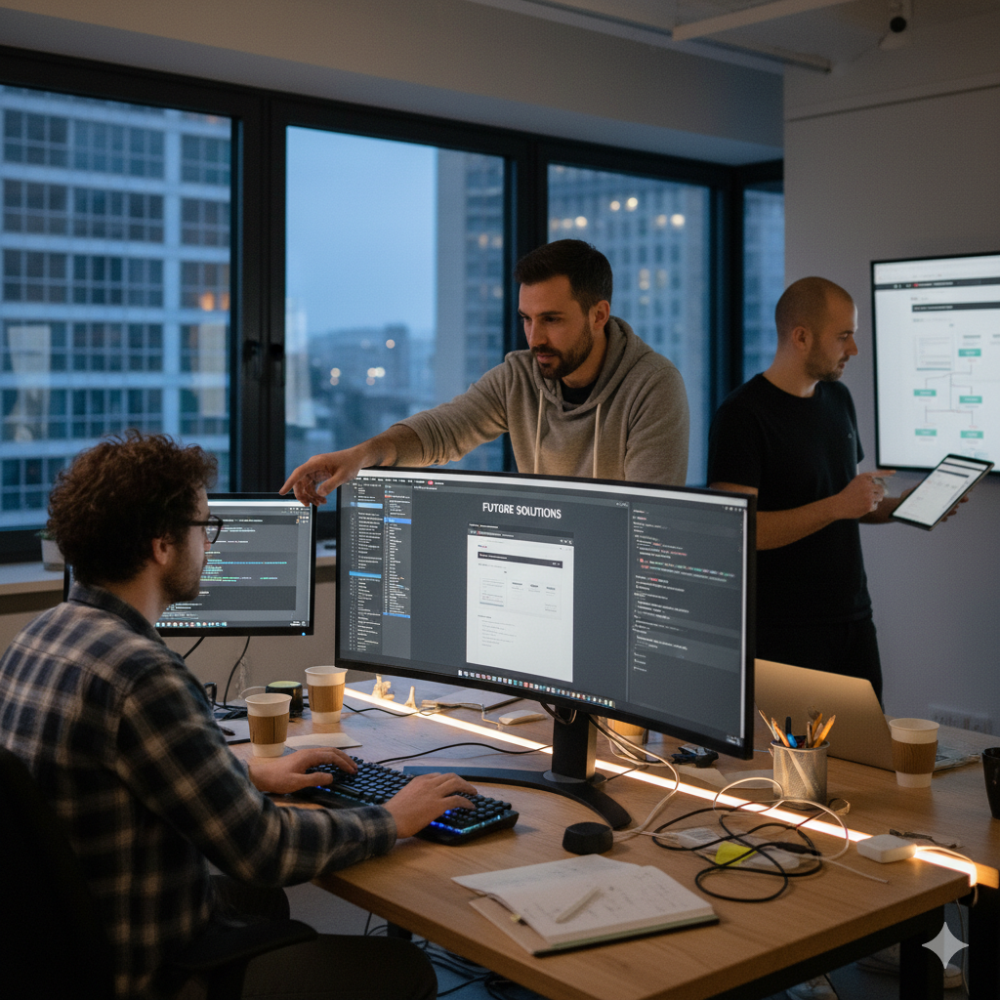
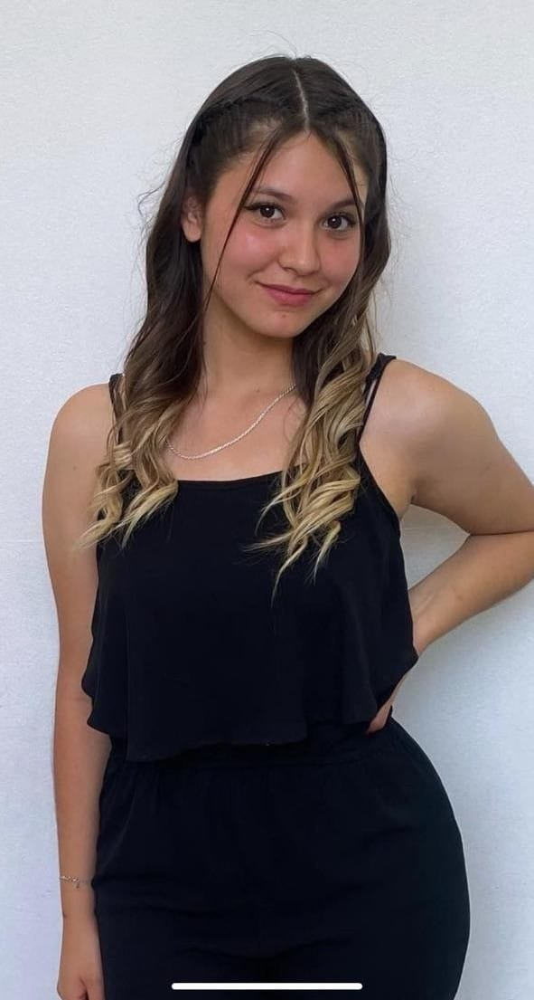

Sobre Nosotros
En Stile & Beauty creemos que la belleza es el reflejo del cuidado y la dedicación. Nuestro proyecto nace de la unión entre Drhiaishna Martínez Miranda y nuestro equipo de TI comformado por: Bastian Sanches, Matias Diaz y Elias Delgado .
Drhiaishna aporta la experiencia y pasión en el área de la estética, mientras que nosotros, como Ingenieros en Informática, respaldamos con apoyo tecnológico y estratégico en cada etapa de este proyecto.
Nuestro sueño en conjunto es ofrecer un centro de estética integral que combine profesionalismo, calidad y valores sólidos, donde cada persona se sienta única, cuidada y valorada.

Drhiaishna Martínez Miranda
Drhiaishna es una profesional apasionada por la estética, actualmente egresada de la carrera de Estética Profesional en AIEP.
Cuenta con formación especializada en tratamientos capilares (alisado permanente, botox capilar) y con más de un año de experiencia en la prestigiosa peluquería “MARTIN C” en Vitacura.
En sus servicios particulares ofrece:
- Tratamientos capilares: alisados permanentes y botox capilar.
- Masoterapia: masajes descontracturantes, relajantes, reductivos y post-operatorios.
- Estilismo y color: cortes femeninos y masculinos, tinturas completas, balayage y mechas.
- Maquillaje profesional: para toda ocasión.
- Manicure y pedicure: aplicación de Soft Gel y acrílico.